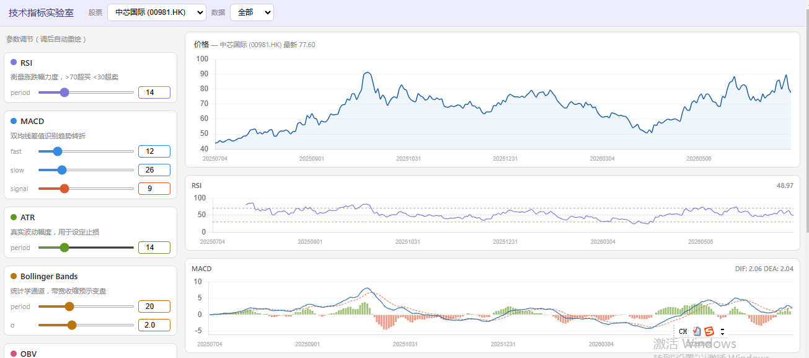
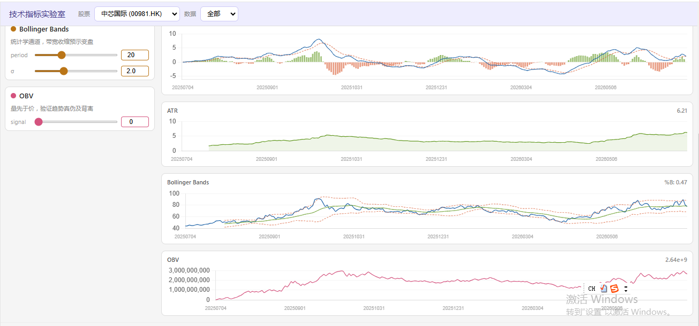

Task2 · 技术指标与量化分析
1.对数据进行基础的诊断分析，检查缺失值，计算描述性统计量。
对于下载的全部四组数据（中芯国际Ａ股＋Ｈ股，比亚迪A股，长江电力A股）均无缺失值。部分缺失的交易日属于正常的 A 股/港股休市（国庆、元旦、春节等），不是数据质量问题。
| 指标 | open | high | low | 收盘价 | vol |
|---|---|---|---|---|---|
| 均值 | 114.93 | 117.88 | 113.01 | 115.38 | 681k |
| 中位数 | 115.57 | 117.94 | 114.24 | 116.58 | 551k |
| 标准差 | 16.45 | 17.56 | 15.53 | 16.53 | 438k |
| 最小值 | 85.49 | 86.17 | 84.86 | 85.48 | 135k |
| 最大值 | 160.19 | 166.88 | 152.31 | 158.82 | 2.5M |
表1 中芯国际 A股 (688981.SH前复权)描述性统计
| 指标 | open | high | low | 收盘价 | vol(手) |
|---|---|---|---|---|---|
| 均值 | 67.40 | 69.17 | 65.64 | 67.27 | 98M |
| 中位数 | 69.60 | 70.90 | 68.15 | 69.40 | 81M |
| 标准差 | 10.99 | 11.41 | 10.42 | 10.81 | 59M |
| 最小值 | 43.10 | 44.80 | 41.50 | 43.95 | 7M |
| 最大值 | 91.80 | 93.50 | 88.65 | 91.05 | 372M |
表2 中芯国际 港股 (00981.HK)描述性统计
| 指标 | open | high | low | 收盘价 | vol |
|---|---|---|---|---|---|
| 均值 | 27.57 | 27.73 | 27.40 | 27.56 | 997k |
| 中位数 | 27.51 | 27.69 | 27.37 | 27.56 | 903k |
| 标准差 | 0.92 | 0.91 | 0.93 | 0.92 | 434k |
| 最小值 | 25.65 | 25.94 | 25.38 | 25.65 | 301k |
| 最大值 | 30.61 | 30.79 | 30.40 | 30.61 | 2.93M |
表3 长江电力 A股 (600900.SH前复权) 描述性统计
2.通过搜索和大模型了解基础描述指标，包括 RSI，MACD，布林带（Bollinger Bands）三个指标，给出具体计算方法以及作用。
2.1
RSI 是反映相对强弱的指标，是震荡指标，判断超买超卖，取值0~100，大于70，超买，价格大概率回调；小于30，超卖，价格大概率反弹。
计算每日涨跌幅差值，拆分上涨和下跌均值。
相对强弱RS = avg_gain / avg_loss
RSI = 100 - 100 / (1 + RS)
默认参数: 周期 14
2.2
MACD： 异同移动平均线，通过两条不同周期指数均线差值，捕捉趋势变化，顶底背离，包括DIF、DEA、MACD柱三部分。
计算:
DIF = EMA(收盘价, 12) - EMA(收盘价, 26)
DEA = EMA(DIF, 9)
MACD柱 = 2 × (DIF - DEA)
默认参数: fast=12, slow=26, signal=9
作用:金叉: DIF 上穿 DEA → 看涨信号（零轴下方金叉更可靠）；
死叉: DIF 下穿 DEA → 看跌信号（零轴上方死叉更可靠）；
零轴穿越: DIF 上穿零轴 → 多头市场；下穿零轴 → 空头市场；
柱体收缩: 动能在减弱，趋势可能到头；
适合趋势行情，横盘震荡时假信号多。
2.3
布林带 (Bollinger Bands)：通道指标，基于移动平均线和标准差构建上下轨道，反映价格波动区间。
计算:
中轨 = SMA(收盘价, 20)
σ = std(收盘价, 20)
上轨 = 中轨 + 2 × σ
下轨 = 中轨 - 2 × σ
%B = (收盘价 - 下轨) / (上轨 - 下轨)
带宽 = 上轨 - 下轨
默认参数: period=20, std_dev=2
作用:
触上轨: 价格处于 +2σ 位置，超买（强趋势可沿上轨走）
触下轨: 价格处于 -2σ 位置，超卖（需等回头再入场）
带宽收缩 (squeeze): 波动率压缩到极致 → 通常是大行情前兆
带宽扩张: 趋势正在加速，顺势持有
%B: 价格在通道内的相对位置，>1 或 <0 为极端行情
3.python编程实现以下内容：
1）加载已存储的股价数据：中芯国家A股H股，比亚迪、长江电力。
2）计算RSI，MACD，布林带（Bollinger Bands）
3）根据指标计算结果绘制对应可视化图形
4.扩展了解还有其他哪些典型指标，选取一个进行介绍和计算，并用图形表示
3、4题作答详细过程见网址。
https://github.com/YuqiangDeng/AI-quant/tree/main/AI-quant-lab


在三个指标之外，笔者还选取了ATR和OBV两个指标，加入到可视化当中。
OBV — 能量潮 (On-Balance Volume)
计算:
if 收盘价 > 收盘价(prev): OBV = OBV(prev) + volume
if 收盘价 < 收盘价(prev): OBV = OBV(prev) - volume
if 收盘价 = 收盘价(prev): OBV = OBV(prev)
默认参数: 无（累计值），可选信号线周期
作用:
趋势确认: OBV 与价格同步上升 → 上涨有量支撑；OBV 跟不上价格 → 上涨无量，警惕反转
背离信号: 价格新高 OBV 未新高 → 顶背离，看跌；价格新低 OBV 未新低 → 底背离，看涨
突破验证: 价格突破阻力位 + OBV 同步突破 → 真实突破；OBV 没跟上 → 假突破
核心思想: 量先于价 — 成交量是价格变动的先行指标